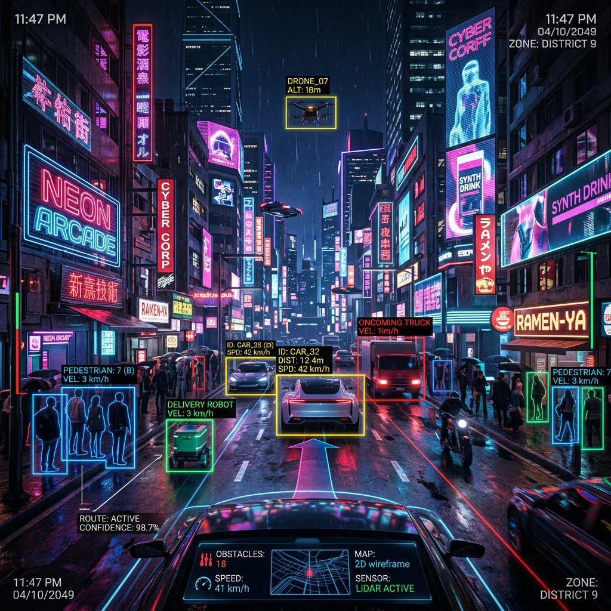

Core Features
Caption Generation
Sub-second inference mapping high-dimensional image vectors to descriptive linguistic patterns using BLIP architectures.
Noise Reduction
Industry-leading NLM and Bilateral filtering preprocesses degraded visuals automatically before analysis.
Dynamic Inference
Take control of beam-search trajectory, temperature scaling, and context window token limits securely.
Use Cases
Healthcare
Analyzing complex medical imaging scenarios. Assisting diagnosticians with fast, descriptive metadata generation.

Autonomous Vehicles
Transforming immediate dashcam pixel frames into actionable linguistic data to predict pedestrian movement and object bounds.
Accessibility & Wearables
Live, real-time captioning for blind and visually impaired users when integrated with hardware like Meta Smart Glasses, converting visual scenes into audio-ready semantic data streams.
Latest Blogs & Insights
Training Models for Wearable AR
Discover how proper resource allocation and model distillation allow us to fit complex captioning models directly inside wearable tech.
Read full article →The Future of Assistive AI
An exploration of real-time latency optimization for visually impaired accessibility.
Read full article →